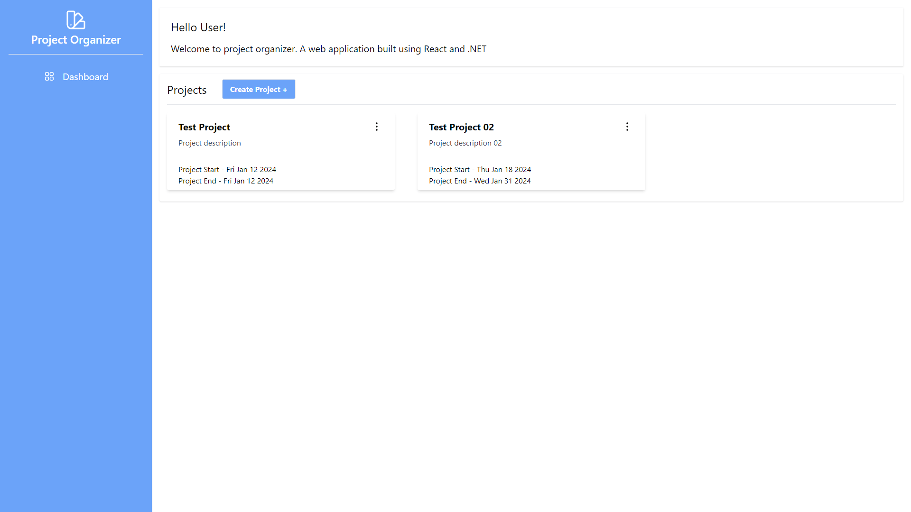
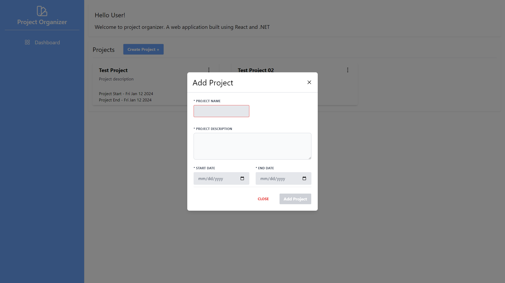
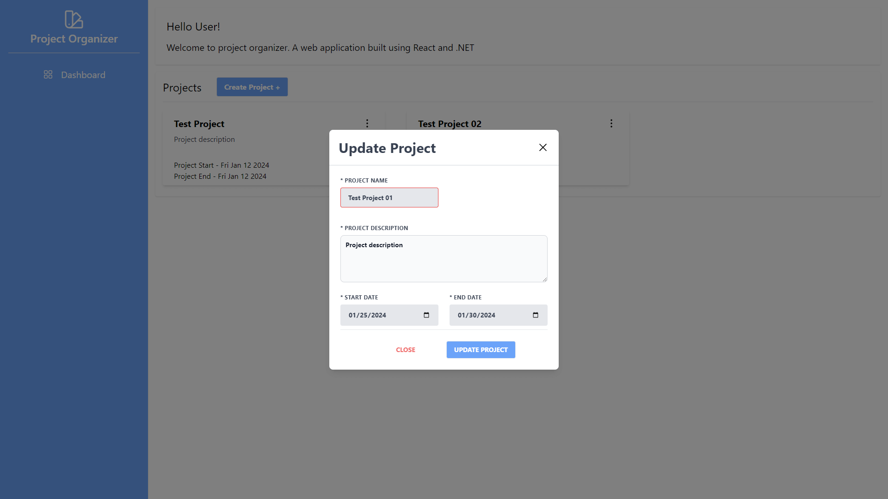
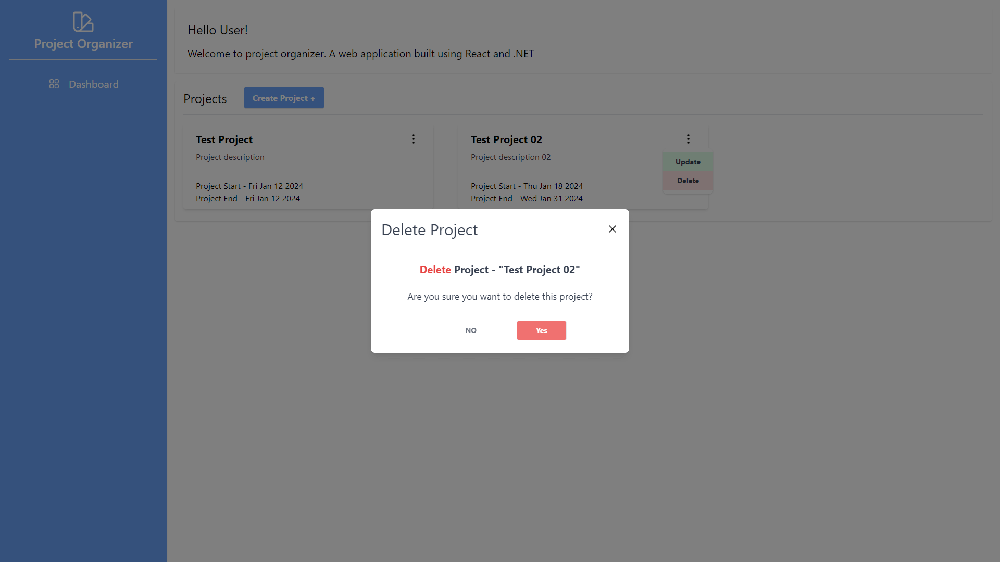

Side Project: Project Organizer
Oct 15 2023
Reasoning Behind this Project
The project organizer is a side project I am using to help build my skillset broadly covering the software
development lifecycle.
I focus on using modern technologies and see the pros and cons in my project. Along the way I intend to create a number of how to guides covering
each major implementation.
Below is a number of screenshots to cover the current iteration. Currently the project is in a private repository on
BitBucket. Over the coming days or weeks. I am hoping to migrate
it into a public repository for others to view, and even pull into their local environment.




Project Stack
Frontend
- React - Frontend Architecture
- React Router - HTTP Navigation
- SWR 2.0/Fetch - REST Client
- Tailwind CSS - UI
- MirageJS - Mock API
- Vite/Vitest - Testing Framework
- TypeScript - Transpiler/Type Checking
Backend
- .NET 7 - Backend Architecture
- Entity Framework 7+ - Code-First Database Management
- Swagger - API Visual Testing
Next to Implement
- xUnit/AngleSharp - Backend Testing/Integration
- JWT Authentication - User Authentication
- Devops - CI/CD, Deployment, Automation
- Terraform - Infrastructure
After the above has been setup properly I am looking to expand the complexity of the application. Looking to expand the projects to where a user can be associated
to one. Other users can be apart of these projects as well.